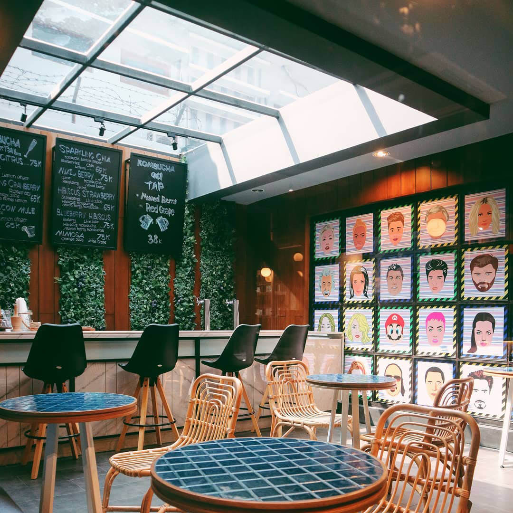

Who We Are
VOrgreens is an Indonesia's plant-based eatery chain serving delicious healthy, ethical, and sustainable food. VOrgreens provides many variant cuisines that are undoubtedly healthy and delicious. In contrast to other Indian eateries, VOrgreens was made with the explicit expectation to appear as something else. Our menu highlights things that utilization the sound and fragrant flavors, however, forgets anything that are not plant-based.
Vision
To serve happiness to our customers through delicious, quality meals and extraordinary eating experience while working toward the greater good for our employees, community and environment.
Mission
To provide our customers with a comfortable, quality, and satisfying dining experience using local, plant-based ingredients through various cuisines.
Our History: The Opening of '87
1987 was the year of miracle, it was the the year when VOrgreens officially started. Focusing on the goals of “Looks good, tastes goos” the company is family operation making each dish in our own kitchens from scratch. VOrgreens has three generations of family member working together to fulfill the idea “Looks good, tastes good”. Through hard work and dedication, VOrgreens began building its brand around the idea of delicious and fenomenal plant-based food.